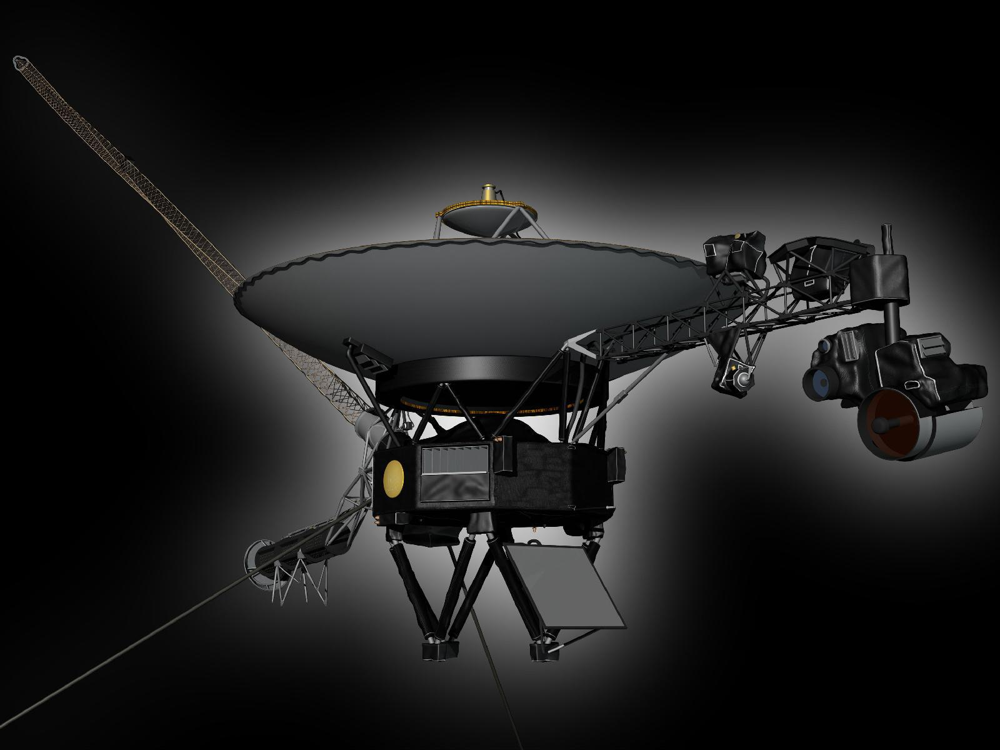

Voyager 1 e Voyager 2 são sondas espaciais lançadas pela NASA para estudar os planetas exteriores e continuar viajando pelo espaço.

| Sonda | Ano de lançamento | Principal objetivo |
|---|---|---|
| Voyager 1 | 1977 | Estudar Júpiter e Saturno |
| Voyager 2 | 1977 | Estudar Júpiter, Saturno, Urano e Netuno |